External Resources
Check out these links for more information:
- Official Minecraft Website
Explore the official site for the latest updates, game downloads, and community news.
- Minecraft Wiki
Dive into the ultimate guide for everything Minecraft—blocks, mobs, mechanics, and more.
- Minecraft Forums
Connect with other players, share ideas, and find mods or custom maps.
Minecraft Characters
Minecraft offers a variety of characters that bring the blocky universe to life. From default avatars to unique mobs, every entity in the game has its own story and role.
Default Characters
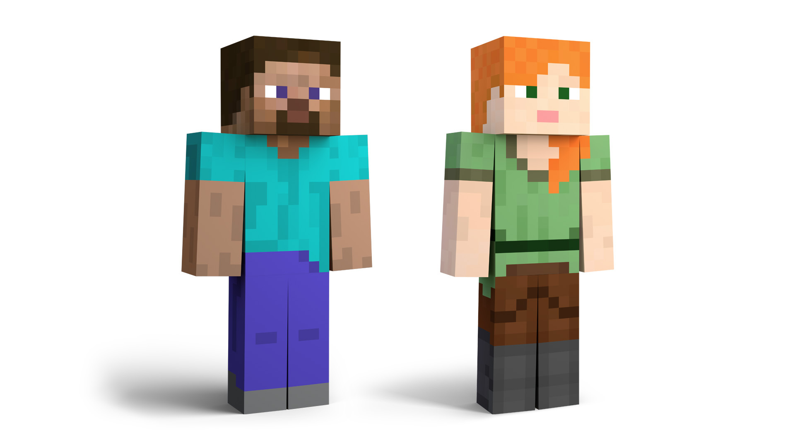
- Steve
The iconic default male character, recognizable by his blue shirt and jeans. Steve represents the spirit of creativity and adventure in Minecraft.
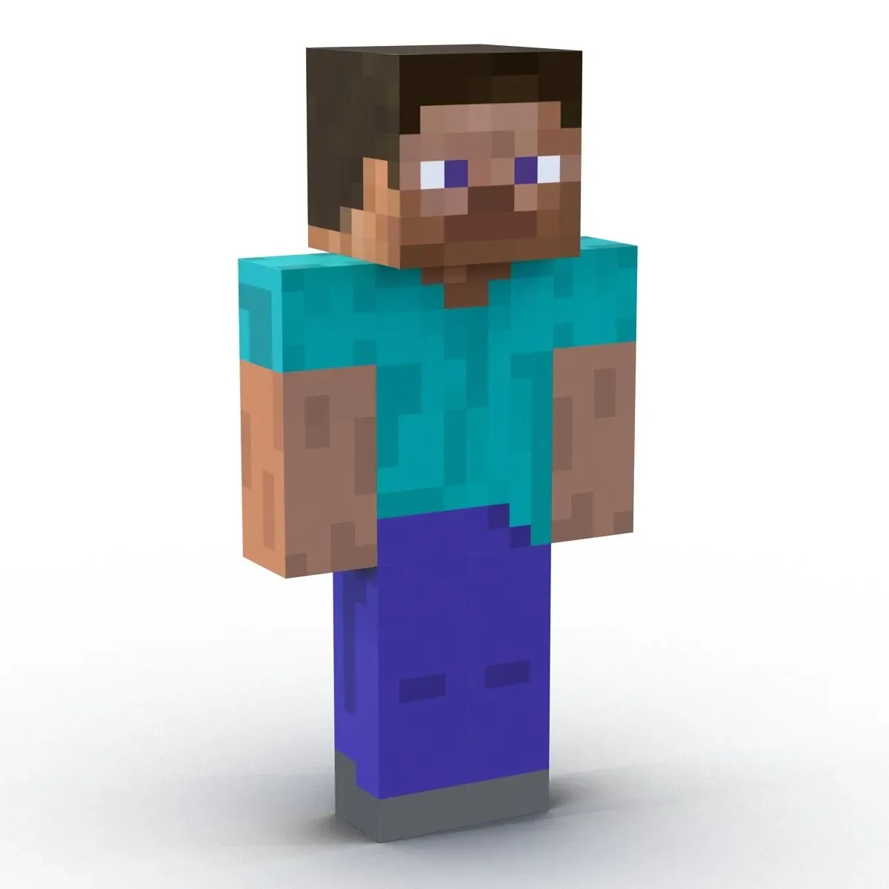
- Alex
The female counterpart to Steve, Alex is known for her green shirt and orange hair. She embodies inclusivity and versatility in gameplay.
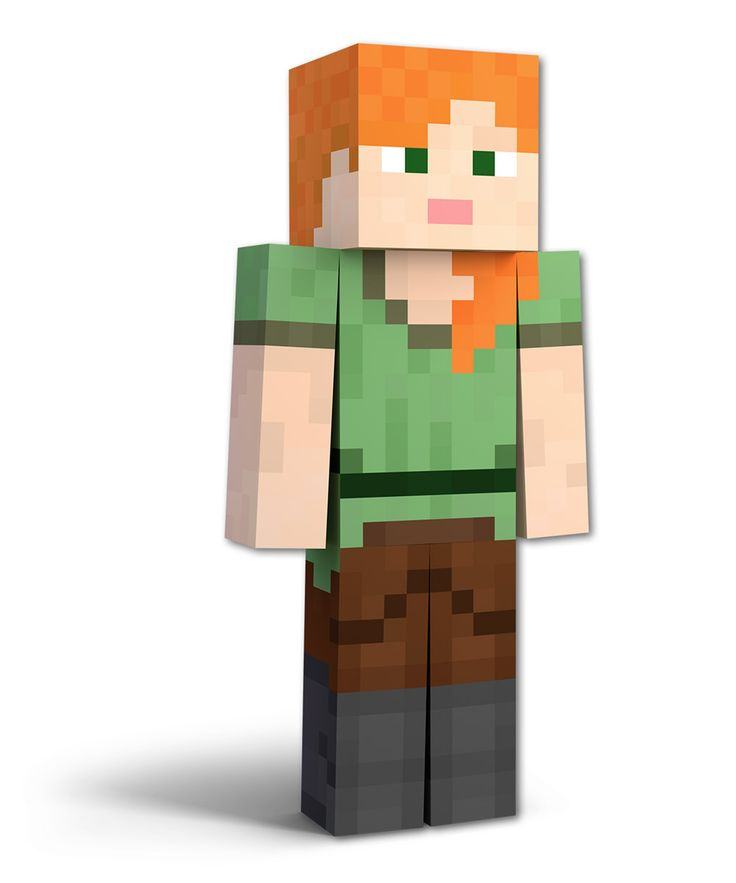
Hostile Mobs
- Creeper
One of the most feared mobs, Creepers silently approach players and explode. They are a true test of a player’s reflexes and strategy.
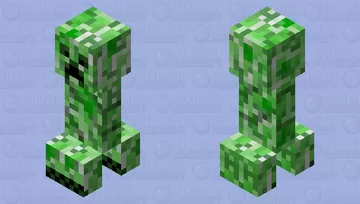
- Enderman
Mysterious creatures capable of teleportation. While neutral by default, they become hostile if you dare to look them in the eyes.
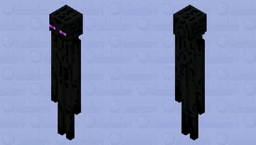
- Zombie
Classic undead enemies that roam the night. Zombies add a sense of danger and survival to the game’s darker hours.
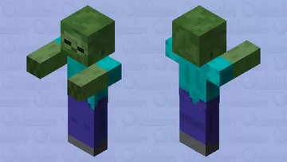
Passive Mobs
- Cow
A source of milk, leather, and beef. Cows are a staple for players looking to craft armor or prepare hearty meals.
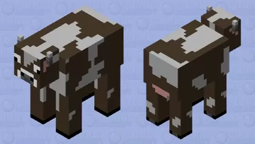
- Sheep
These woolly creatures provide wool for beds and banners. They can also be dyed in various colors to suit your creations.
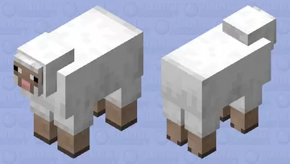
- Villager
Non-playable characters found in villages. They trade valuable items and offer unique professions like farming, blacksmithing, and clerical work.
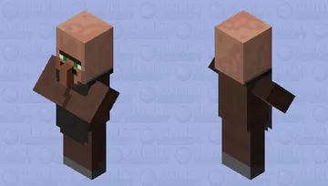
Boss Mobs
- Ender Dragon
The final boss of Minecraft’s End dimension. Defeating the Ender Dragon is a milestone in any player’s journey.
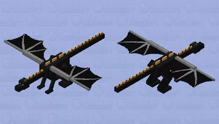
- Wither
A terrifying three-headed boss summoned by players. It drops Nether Stars, essential for crafting beacons.
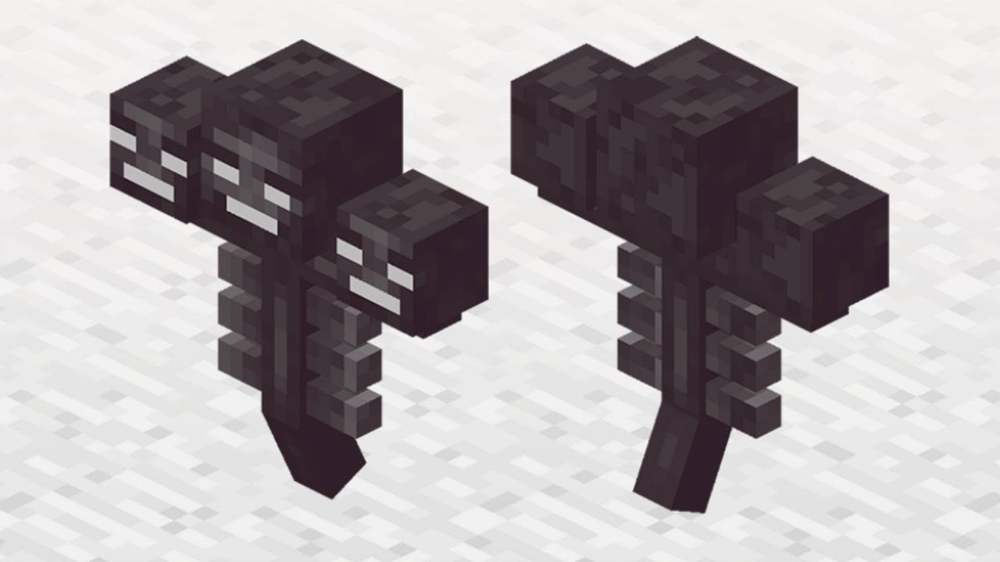
Back to Resources